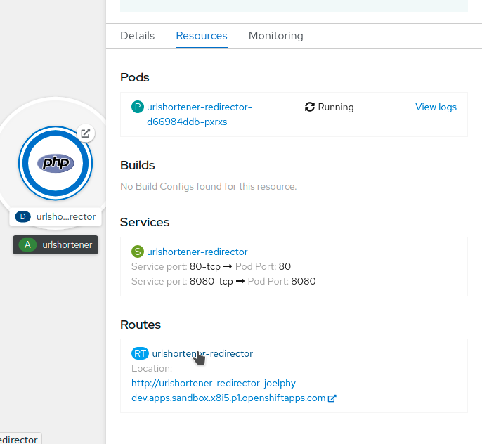
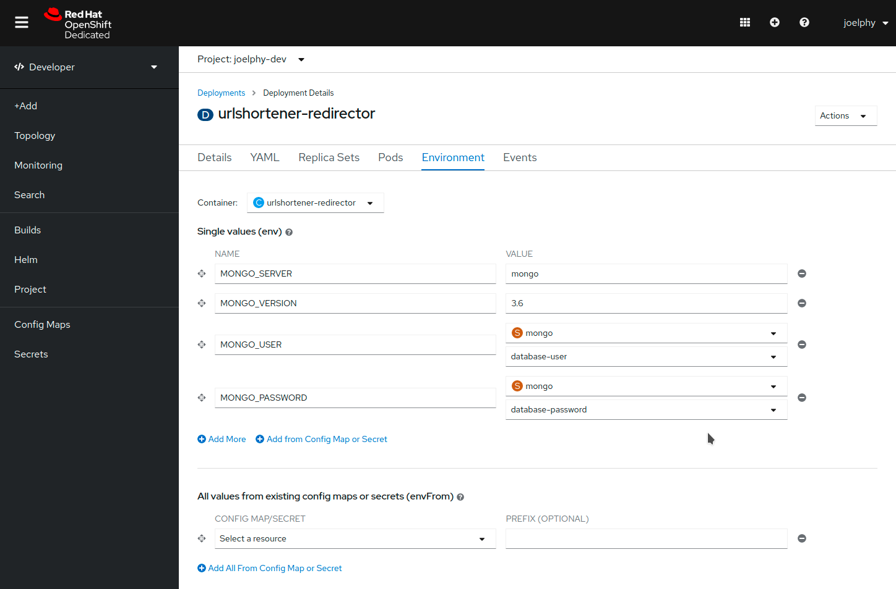

Add a new micro-service
You now have a front-end, an API and a database deployed and running on OpenShift. This application needs another micro-service that short URLs will point to and will redirect to the matching longer URL found in the database.
One of the many benefits of deploying containerized micro-services is that they don’t need to be written in the same language. In this example, you will see how to add a PHP server to this application.
Add from existing image
The image containing the service is already built for you. If you are curious, you can find the source code and Dockerfile in the /redirector folder of the source code.
You can add this image by using the same commands as in the first section of this workshop, or you can use the UI to do the same thing.
To do so, click on the Add+ link in the left navigation bar of the console.
Next, choose the Container Image card. A new page titled Deploy Image will be displayed.
In the field Image name from external registry, enter joellord/urlshortener-redirector.
Optionally, you can change the Runtime Icon. Since this is a PHP application, I like to use the matching icon.
For the Application Name, remove the redirector-app to keep urlshortener. This will create a group in the topology view and you will be able to add the other services to it.
Everything else can use the default values. Click on the blue "Create" button when you are ready.

The application should have been successfully deployed, but the route won’t work for now. Because this image has two different exposed ports, the created route was mapped to the wrong port. To change this, you can click on the urlshortner-redirector application in the topology view. In the "Resources" tab from the side panel, click on the route name.

From the Actions dropdown, choose Edit Route. This opens up a YAML editor. Scroll down to find the "spec" object (they are in alphabetical order). Then look for the "port" property. In here, the targetPort has the value "80-tcp". Change that to "8080-tcp" and click Save.

You can now go back to the Topology view and click on the Open URL link for the urlshortener-redirector application. This will show a page with a few errors.
The PHP application doesn’t have environment variables yet, so it can’t connect to the database for now.
Update Environment Variables
For the redirector service to connect to the Mongo database, it needs a few environment variables.
Click on the application, and from the Action dropdown in the side panel, choose Edit Deployment. Choose the Environment tab and fill in the following values:
-
MONGO_SERVER: mongo
-
MONGO_VERSION: 3.6
-
MONGO_USER from mongo Secret: database-user
-
MONGO_PASSWORD from mongo Secret: database-password

Then click Save, and the urlshortener-redirector application will restart with these new environment variables.
Now that the service is configured and ready to go, update the REDIRECTOR_URL environment variable from the front-end to point to this service.
oc set env deployment/urlshortener-front REDIRECTOR_URL=http://$(oc get route urlshortener-redirector | awk 'NR>1 {print $2}')deployment.apps/urlshortener-front updatedThe front-end pod will restart with the new environment variables.
Verify the status of the application
Now that you have everything up and running, open up the application About page again. You should see all systems green.

You can now use the application.
Congratulations! You’ve deployed a full JavaScript application into an OpenShift cluster.
Now that you have an application in the developer sandbox, you can try various things such as scaling up some of the applications, grouping the applications in the topology view and looking at the logs inside the pods.
To learn more about OpenShift, you can try out some of the smaller workshops at http://learn.openshift.com.